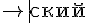

Авторы библиотеки MimeTeX утверждают, что для кодировки кириллистических символов у них используется какая-то (не говорят какая) LaTeX-кодировка. Однако это не так. Для кодирования символов кириллицы используется свой особый способ.
Итак, чтобы написать кириллистический символ, можно воспользоваться синтаксисом:
{\cyr x}
где x - это обозначение кириллистического символа английскими буквами (или спецсимволами). Таблица обозначений приведена ниже по тексту. Можно писать не одну букву, а сразу несколько.
Например, чтобы написать слово "Привет", можно написать так:
{\cyr Privet}
С простыми буквами, у которых есть прямой аналог в английском алфавите, всё понятно. Но в таблице встречаются русские буквы, которым соответствует набор английских букв или строка, содержащая специальные символы. Если итоговая строка английских символов не будет допускать двоякого толкования последовательности, то такую строку тоже можно писать без особых ухищрений.
Например, слово "сущность" можно написать так:
{\cyr sushchnost\cprime}
Но безобидное слово "детский" уже просто так не напишешь. Причина в том, что букве "т" соответсвует "t", букве "с" соответствует "s", но буквосочетание "ts" будет рассматриваться как буква "ц", и поэтому прямое написание по таблице приведет к появлению неправильного слова "децкий"
{\cyr detski\u\i} - получится "децкий"
Поэтому в таких случаях надо писать так:
{\cyr de}{\cyr t}{\cyr ski\u\i}
Здесь возникает вопрос, а зачем буква "t" выделена в отдельный блок "{}"? Почему нельзя было написать:
{\cyr det}{\cyr ski\u\i}
А потому что тогда получится такое:

То есть просто разбить строку в которой есть "ts" на два куска, чтобы "t" оказалось в одном куске, а "s" - в другом не получится. Причина в том, что библиотека mimeTeX знает кучу разных специальных обозначений, и одно из таких обозначений - "det" (которое обозначает соответствие в математике?). Если такое обозначение будет без дополнительных символов, то вместо строки "дет" будет нарисован символ соответствия. Если же в блоке, который трактуется как обозначение, будет хотя бы один символ, который не входит в известные обозначения, то обозначение не будет парситься, и будут написаны просто буквы. Например, слово "дети" будет написано без проблем:
{\cyr deti}
При написании кириллистических символов можно будет заметить, что иногда буквы расставляются с правильными расстояниями между ними, иногда почти слипаются. Но с этим практически ничего нельзя поделать, приходится исплозовать как есть.
А вот и сама таблица:
а - a
б - b
в - v
г - g
д - d
е - e
ё - \"e , Ё - \"E
ж - zh , Ж - Zh или ZH
з - z
и - i
й - \u\i , Й - \u I (да, почему-то авторы захотели чтобы был пробел)
к - k
л - l
м - m
н - n
о - o
п - p
р - r
с - s
т - t
у - u
ф - f
х - kh , Х - Kh или KH
ц - ts , Ц - Ts или TS
ч - ch , Ч - Ch или CH
ш - sh , Ш - Sh или SH
щ - shch , Щ - Shch или SHCH
ъ - \cdprime , Ъ - \Cdprime
ы - y
ь - \cprime , Ь - \Cprime
э - \`e , Э - \`E
ю - yu , Ю - Yu или YU
я - ya , Я - Ya или YA
Данная таблица создана путем расковыривания исходников mimeTeX. В явном виде в документации нигде именно таких обозначений найти не удалось. К данной статье прикреплен PDF-файл "ISO character entities and their LATEX equivalents", в котором имеется похожая таблица (стр. 28-29), однако она не точно соответсвует тому, что понимает библиотеку mimeTeX.